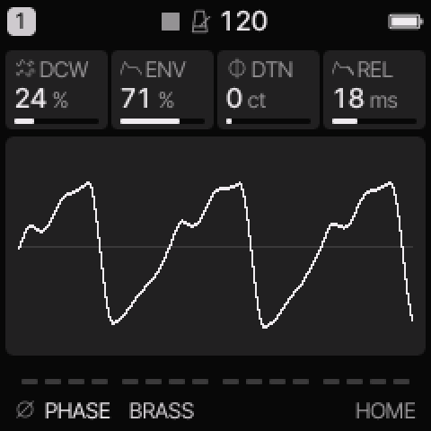
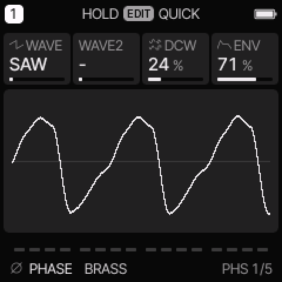
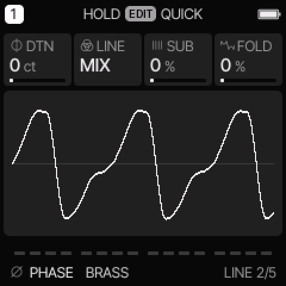

PHASE engine
All engines · Modes and shared controls
Use PHASE for CZ-style basses, brass, resonant digital tones, and glass plucks.
How the sound is made
Phase distortion changes how quickly an oscillator reads different parts of its wave. DCW sets this distortion. A second line can mix with the first or ring-modulate it.

PHASE on HOME. These knobs apply to the selected track unless HOME LEVELS is enabled.
HOME knobs
| Knob 1 |
Knob 2 |
Knob 3 |
Knob 4 |
| DCW |
ENV |
DTN |
REL |
For HOME LEVELS, see HOME and mixer.
Engine controls
Press the panel EDIT button to cycle the engine pages.
Pause between presses to avoid opening its shortcut layer.
The musical EDIT key is a different control.
PHS page

PHS is engine page 1.
| Control |
What it changes |
| WAVE |
Select the first phase-distortion shape. |
| WAVE2 |
Select a second shape, or “-” to turn the second line off. |
| DCW |
Set phase-distortion depth. It often acts as a brightness control. |
| ENV |
Set how much the common envelope moves phase distortion. |
LINE page

LINE is engine page 2.
| Control |
What it changes |
| DTN |
Detune the second line, in cents. |
| LINE |
Select MIX or RING for the two lines. |
| SUB |
Add the lower sine component. |
| FOLD |
Add smooth wavefolding. Zero bypasses it. |
Wave and line modes
| WAVE |
Character |
| SAW, SQR, PLS |
Saw-like, square-like, and pulse-like phase-distortion shapes. |
| DSIN |
Double-sine shape. |
| SPLS |
Shaped pulse. |
| RSAW, RTRI, RTRP |
Resonant saw, triangle, and trapezoid families. |
MIX combines the lines. RING multiplies their signals for extra sum and difference tones.
Select a WAVE2 before comparing MIX and RING.
ENV here means distortion-envelope depth, not a second amplitude envelope.
The common ENV still sets the note's amplitude shape.
Try these changes
Make a digital brass swell
Load BRASS. Compare low and high DCW. Increase ENV and adjust common ATK so the brightness rises with the attack.
Make a glass strike
Load CZ GLASS. Compare MIX and RING with the second line active. Add a small FOLD amount, then lower it if the attack becomes too bright.
Factory presets
BRASS, RESO, BELL, CZ BASS, CZ STRINGS, CZ GLASS, CZ ORGAN, CZ WIRE.
See the inspired preset catalogue for the references behind the newer sounds.
Limits and useful checks
PHASE is phase-distortion synthesis, not the FM6 or YM algorithm system. Resonant shapes and ring modes can change loudness as well as tone.
Save a user preset or project before loading another sound if you want to keep your edits.